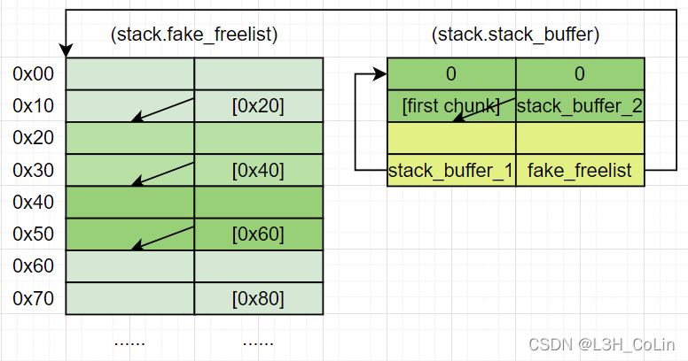

how2heap下载网址: 传送门
Glibc源码查看网址：传送门
参考书籍：CTF竞赛权威指南-pwn篇
测试环境：Ubuntu 18.04
Glibc 版本：Ubuntu GLIBC 2.27-3ubuntu1.5
按照顺序，本文将分析glibc 2.27文件夹下的前6个源码，其中主要分析fastbin_reverse_into_tcache，house_of_botcake，house_of_lore。
如果本文的分析有任何错漏之处，还请各位读者不吝赐教，不胜感激。
1. fastbin_dup
熟悉的味道。double free嘛。不过首先将tcache对应的cache填满了。不再赘述。
2. fastbin_reverse_into_tcache
看标题应该和tcache有关，仔细看一下。
首先就分配了14个0x50大小的chunk，然后释放7个填满了tcache，再释放7个填满了fastbin。在栈区分配了6个8字节空间，初始化为全0xcd。之后漏洞关键步骤：将第8个free掉的chunk（即第1个被放入fastbin的chunk）的fd修改为栈区这6个8字节空间的开头。记住：第8个被释放的chunk在fastbins的尾部，fastbin是链栈结构。
之后，将tcache分配完清空。然后注意：再malloc一次会将所有fastbin chunks转到tcache中，而且是和fastbin逆序的关系链入tcache。
这是malloc之前的bins：
1 | tcachebins |
这是malloc之后的bins：
1 | tcachebins |
从前后的变化我们可以大胆猜测这一步进行了什么操作：
由于malloc之前tcache没有chunk，所以_int_malloc只能从fastbin中查找。查找到合适的chunk之后，会将这个chunk记录下来留作之后返回。但是并不是立即返回，_int_malloc发现fastbin后面还有chunk，于是从头指针不断弹出chunk到tcache的头指针。如此操作之后原来fastbin中的chunk到了tcache的顺序就反过来了。因为一个fastbin最多有7个chunk。那么_int_malloc函数应该会循环7次退出，或者是检查到chunk的fd指针为0时退出（这个chunk就是fastbin中最后一个chunk了）。在malloc之后，fastbin中还剩下6个chunk。在弹出这6个chunk之后，libc发现了我们修改的fd指针，此时fastbin的指针指向栈区，于是libc顺理成章地将这个栈区的指针也链入到了tcache中，并放在tcache的头部，然后不加检查地就退出了。此时，fastbin中却只剩下了一地鸡毛：一个我们在初始化栈区时嵌入的无效的指针值（0xcdcdcdcdcdcdcdcd）。在栈区指针链入之后，栈区中的值实际上就已经发生了改变，fd指针的地方变成了后面一个chunk的地址，bk指针的地方应该是被修改为了tcache结构体位置的地址（因为tcache中后面的chunk在bk处设置的值是相等的）。然后，我们只要再进行一次malloc就能够获得一个栈上面的地址了。
查看源代码之后，验证了我们的猜想。
1 | if (tcache && tc_idx < mp_.tcache_bins) |
1 |
1 |
|
while语句就是将fastbin chunk移至tcache中，其中REMOVE_FB函数就是取出fastbin的第一个chunk链入到对应tcache头。后面检查fastbin里面是否还有chunk，没有则退出。
在源代码中，还考虑了当fastbin中的chunk数量少于7个的情况。如果fastbin没有被填满，则在链入栈区的地址后，_int_malloc还会继续检查栈区这个假chunk的fd是否为0，如果是一个无效值就会导致程序崩溃。但如果是0的话也是可以达到上面的效果，将栈区地址链入到tcache头的。但是栈区的不稳定性与可重用性决定了其在未初始化时的值不确定，所以fastbin没有填满时进行malloc有一定的风险，不一定能够成功。
理解本漏洞利用方式需要理解fastbin和tcache的交互过程，实际上也比较容易理解。既然glibc决定添加tcache，就要让其发挥最大限度的作用——成为一个比fastbin还要fast的堆块分配模块，所以这种情况下肯定是要让fastbin里面的chunk尽可能往tcache里面塞。又考虑到fast的性质，在tcache不空的时候不会触发这个过程。
3. house_of_botcake
这是一种通过tcache进行的漏洞利用方法，能够让malloc返回任意地址值。
首先在栈区分配0x20空间，这是之后malloc要返回的地址。之后分配9个0x110的chunk，外加一个小chunk防止top chunk合并。然后释放前7个chunk填满tcache。然后先释放第9个再释放第8个chunk，这样释放完之后这两个chunk因为同在unsorted bin中，所以会合并。后面分配一个chunk出来，这个chunk当然是从tcache中获取（第7个chunk）。获取之后再次释放第9个chunk，此时第9个chunk被放到了tcache中，也即第9个chunk被double free，导致重叠了。
之后呢，分配一个0x130的chunk，这当然会从由第8和9个chunk合并产生的unsorted bin chunk中切割一个chunk分过去。到这里，你的眼里是否有光？我们可以通过这个chunk修改第9个chunk的指针，而这个chunk现在就在tcache的头部！我们将第9个chunk的fd指针修改为栈区我们想要的地址之后，tcache就断链了，此时tcache头部是第9个chunk，后面连着的就是我们想分配的地址。因此后面malloc两次即可。
理解本漏洞利用方法的核心在于理解堆块的重叠。堆块重叠的目的是修改tcache使其最终指向我们想要的地址，这只是一种我们修改tcache的手段而已。tcache不会检查double free。当一个chunk被double free到不同的bin时，杀伤力是最大的，因为这不可能会被检查到。glibc 2.23中的第二个源码好像也是将chunk两次free到不同的bin中。
4. house_of_einherjar
这个漏洞利用在glibc 2.23中有分析，是一种poison null byte漏洞利用方式。还是看一下和2.23有没有什么不同之处。
首先分配0x40的chunk(name: a)，然后在栈构造一个假chunk，prev size和size均为0x100，fd、bk、fd_nextsize和bk_nextsize均设为其本身。之后分配0x500的chunk(name: b)，这样b的size本来应为0x501。之后，漏洞关键步骤：a溢出一个空字节到b使得b的size变为0x500。然后调整a的prev size使得后面堆块合并的时候能够让堆块头到达想要分配的栈区地址。这里a的prev size应设为b - fake chunk，作为呼应，栈区的size也应该修改为这个值。然后将b释放即可得到一个位于栈区的堆块指针。这样看起来和2.23的没有什么不同，只是因为有tcache的存在，所以需要释放的b应该要比较大才行，大于tcache中链入chunk的最大size即可。
5. house_of_force
这个漏洞利用在glibc 2.23中有分析。
源码中想要在bss段的地方进行写操作。首先分配0x110的chunk(name: p1)，然后修改top chunk的大小到最大，再分配一个很大的chunk使top chunk到达要写的地方的正下方，然后再分配一个chunk就能在bss段写了。这个利用方式与2.23没有区别，不再赘述。
6. house_of_lore
这是一种利用small bins的攻击手段，由于glibc 2.27中tcache的影响，具体的利用方式可能会和2.23有所区别。
和2.23相比，2.27的house_of_lore利用需要绕过更加严格的检查。
Step 1: 分配8个0x110的chunk，在栈区开8*7大小的空间，其中包括0x20大小的一块（stack_buffer_1）和0x18大小的一块（stack_buffer_2）。另在栈区开7*4的指针数组。
第1个会成为漏洞利用的对象，而2~8个用于后面填充tcache。
Step 2: 构造栈区，将stack_buffer_1和stack_buffer_2构造为两个假的chunk，将指针数组构造为一个假的free list。
在源码中，我们应该将指针数组的每一个0x20的空间看做是一个chunk，程序所做的就是为每一个假chunk的bk指针赋值使得前一个chunk的bk指向后一个chunk（最后一个chunk不赋值）。之后，将stack_buffer_1的fd指针对应偏移处指向Step 1中分配的第一个chunk，size和prev size均设为0，bk指针对应偏移处指向stack_buffer_2；将stack_buffer_2的fd指针对应偏移处指向stack_buffer_1，bk对应偏移处指向指针数组开头。如图所示。将栈区如此构造主要是为了绕过libc的检查，后面会有所解释。

Step 3: 分配0x1010的chunk消除top chunk的影响。释放2~8个chunk以填满tcache。
Step 4: 释放第一个chunk，它会被链入到unsorted bin中。
Step 5: 分配一个大chunk（0x1210），让第一个chunk进入small bins
0x1210大小的chunk无法被small bins和unsorted bin处理，因此在_int_malloc函数中会在遍历的过程将第一个chunk链入到small bins中。
**Step 6: 覆写第一个chunk的bk指针。**这一步和2.23中相同，将第一个chunk的bk指针改成了stack_buffer_1的栈区地址。
Step 7: 将tcache清空。
将tcache清空的原因是遍历small bins时malloc会将符合大小的chunk链入到tcache中而且是逆向链入，与fastbin_reverse_into_tcache中的过程相似。这是为后面做准备。
step 8: 分配出第一个chunk。
注意：将第一个chunk分配出来之后，malloc会将我们在栈区构造的7个假chunk逆向链入到tcache中。
1 | tcachebins |
在libc源码中有下面这一段，构造stack_buffer_1就是为了绕过这个检查：bck->fd == victim。
1 | [ ... ] |
Step 9: 再分配出一个chunk，这个chunk的地址就在栈区。
由上面的bin分布可知，这个chunk的地址在0x7fffffffe1e0，妥妥的栈区。
Step 10: 利用这个栈上的地址修改main函数返回地址。
这里源代码的执行出现了错误，因为写入的偏移不对，修改偏移到0x68即可绕过canary直接修改返回地址。这里作者可能是误以为tcache中的第一个chunk是预先分配的7个假chunk的最后一个，如果是的话偏移为40就是正确的。但实际上这里是第5个chunk，因为有stack_buffer_1和stack_buffer_2在前，tcache中的结构应该是：
5th stack fake chunk -> 4th -> 3rd -> 2nd -> 1st -> stack_buffer_2 -> stack_buffer_1
这里不知道为什么作者没有注意到这个错误。
可以看到，2.27的house_of_lore和2.23还是有很大区别的，利用tcache的特性将假chunk链入到tcache中再分配以修改栈区内容。通过fastbin_reverse_into_tcache和house_of_lore我们可以发现，在malloc小块内存时，如果tcache中没有chunk而对应small bins或fastbin有，则会将这些chunk尽可能往tcache塞，顺序是先fastbin后small bins。
将small bins中的chunk链入到tcache的libc源码如下：
1 | if (tcache && tc_idx < mp_.tcache_bins) |